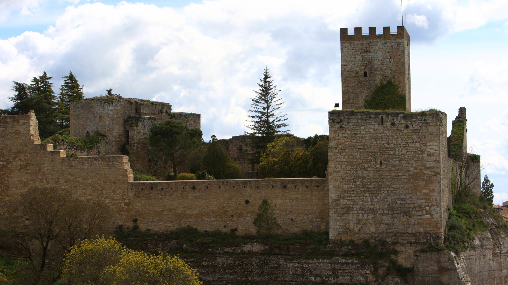

CASTELLO DI LOMBARDIA
Il gigante di pietra
Imponente fortezza medievale che domina la città dall'alto, considerata uno dei complessi castellani più grandi d'Italia. Dalla sua Torre Pisana offre un panorama mozzafiato a 360 gradi che spazia dalle Madonie fino al vulcano Etna.